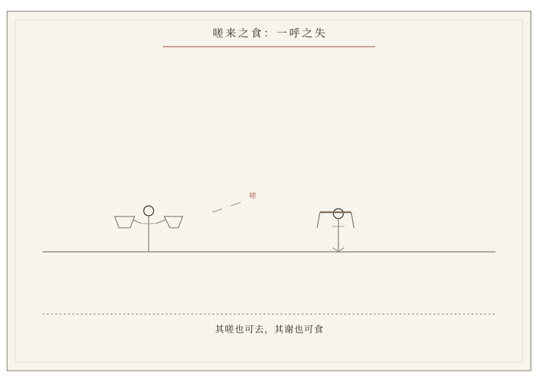

檀弓下 · 四·七十九 · 第 404 课
齐大饥，黔敖为食于路，以待饿者而食之。有饿者蒙袂辑屦，贸贸然来。黔敖左奉食，右执饮，曰：「嗟！来食。」扬其目而视之，曰：「予唯不食嗟来之食，以至于斯也。」从而谢焉，终不食而死。曾子闻之曰：「微与！其嗟也可去，其谢也可食。」
说什么事：齐国大饥，黔敖在路上摆饭，等饿的人来吃。有个饿者用衣袖蒙着脸、拖着鞋，目光昏昏地来了。黔敖左手端饭、右手拿饮，说：「喂，来吃！」那人抬眼看他，说：「我就是因为不吃「喂」着给的饭，才到了这地步。」黔敖跟上去谢过，那人终究不吃而死。曾子听说，说：「何必呢！他「喂」的时候可以走，他谢过之后就可以吃了。」
落在哪一层：以「嗟」一字为界。施者一个呼喝之字，把一顿饭变成了居高之赐。
为何编在此位：上是天子之丧排天下，此落到路边一碗饭。一篇之丧，至此见其「细」。
【经】齐大饥，黔敖为食于路，以待饿者而食之。有饿者蒙袂辑屦，贸贸然来。黔敖左奉食，右执饮，曰：「嗟！来食。」扬其目而视之，曰：「予唯不食嗟来之食，以至于斯也。」从而谢焉，终不食而死。曾子闻之曰：「微与！其嗟也可去，其谢也可食。」
【注】蒙袂，不欲见人也。辑，敛也。敛屦，力惫不能屦也。贸贸，目不明之貌。／嗟来食，虽闵而呼之，非敬辞。／从犹就也。／微犹无也。无与，止其狂狷之辞。
【疏】此一节论饥者狂狷之事。○黔敖既见饿者而来，乃左奉其饭，右执其饮，见其饿者困，咨嗟愍之，故曰：嗟乎，来食！饿者闻其嗟己，无敬己之心，于是发怒，扬举其目而视之曰：予唯不食嗟来无礼之食，以至于斯。斯，此也，以至于此病困。怒而遂去。黔敖从逐其后，辞谢焉。饿者终不食而死。○「曾子闻之曰：微与」者，微，无也；与，语助。言饿者无得如是与。初时无礼之嗟也，可怒之而去。其终有礼之谢也，可反回而食。曾子嫌其狂狷，故为此辞。狂者进取，一概之善，仰法夷齐耿介；狷者直申己意，不从无礼之为。而饿者有此二性，故止之。
大饥 大荒年。
为食于路 在路上设食。
食之 给人吃。下「奉食」同。
蒙袂 以衣袖遮面。
辑屦 敛束其鞋，谓拖沓不能正履。
贸贸然 目不明之貌，昏昏而行。
奉 捧。
嗟 叹声，呼人之辞。
扬其目 抬眼。
斯 此。指此困顿之地。
从而谢 跟上去道歉。
微与 「微」为无，「与」为语助。犹言「何必如此」。
狂狷 狂者进取，狷者守己。
齐国大饥荒，黔敖在路上设饭，等饿的人来给他们吃。有个饿者用衣袖蒙脸、拖着鞋，昏昏然走来。黔敖左手捧饭、右手持饮，说：「喂，来吃！」那人抬眼看他，说：「我正是因为不吃「喂」着给的饭，才落到这地步。」黔敖追上他道歉，那人终究不吃而死。曾子听说，说：「何必呢！他「喂」的时候可以走开，他谢过之后就可以吃了。」
此章三段：施、拒、评。
施者无恶意，拒者无贪生，评者不赞死。
三段的重量，全在一个「嗟」字上。
第一层 黔敖无恶 注云「虽闵而呼之」——他是悯其困，不是轻其人。
然礼之失，不必出于恶。 一个「嗟」字，悯在其中，慢亦在其中。
第二层 「非敬辞」 注三字断之。
施与之为礼，不在与不与，在如何与。 与而不敬，则与者自居于上。
第三层 饿者所争者非食 他说「予唯不食嗟来之食，以至于斯」。
他所守的是一句「我不是被呼来的」。 宁可死，不肯以「受呼」之身活着。
第四层 曾子之评：不赞其死 「微与」——疏云「言饿者无得如是与」。
曾子不说他高，说他「过」。 这是《檀弓》最不肯随人赞叹的一处。
第五层 两分 「其嗟也可去，其谢也可食」。
前半守节，后半许活。 曾子把一件「宁死不受」的事，拆成两段：无礼之时可去，有礼之后可回。
第六层 狂狷之辨 疏云「狂者进取，一概之善，仰法夷齐耿介；狷者直申己意，不从无礼之为」。
饿者兼有二性，故曾子止之。 礼不斥其守，只惜其「一概」。
第七层 此章之分寸 施者不可倨，受者不可矫。
两端各有一失，而礼在两失之间留一条路：谢。
与今日何干 今之施与，多带一个「嗟」的姿态：救你，故我在上。
此章给一句：给人东西时，先看自己站在哪一级。
| 左 | 右 |
|---|---|
| 齐大饥 | 荒年 |
| 为食于路 | 施 |
| 蒙袂辑屦 | 不欲见人，力惫 |
| 左奉食右执饮 | 与者之勤 |
| 嗟 | 非敬辞 |
| 不食嗟来之食 | 所争非食 |
| 从而谢 | 补 |
| 终不食而死 | 一概之守 |
| 其谢也可食 | 曾子许活 |
画一幅简略的路边场景，视点平视。画面下方横贯一条道路线。路之左侧立一人，身形端正，左手捧一只碗、右手持一只杯，两臂前伸。路之右侧立一人，身形佝偻，头上一道横布遮住面，脚下两只鞋拖沓不成形，身体背向左侧之人。两人之间画一道短而斜的折线，自左人之口斜向右人，折线中段断开。画面右端留空。不画草木。不画文字。赭色只用在那道折线的断口上。
